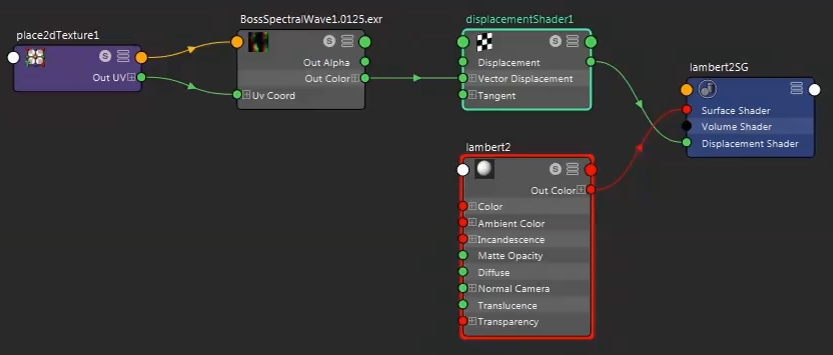

可以将 BOSS 解算器的缓存 EXR 文件用作向量置换贴图进行渲染。
- 在缓存该解算器之前，确保启用“使用水平置换”(Use Horizontal Displacement)，使缓存文件包含所有轴的值。有关缓存 BOSS 解算器的详细信息，请参见缓存 BOSS 解算器和影响。
- 将置换着色器连接到材质。
- 在置换着色器中，确保：
- 将“向量编码”(Vector Encoding)设置为“浮点绝对”(Floating-Point Absolute)。
- 将“向量空间”(Vector Space)设置为“世界”(World)。
- 将“文件”(File)节点的“输出颜色”(Out Color)端口连接到置换着色器的“向量置换”(Vector Displacement)输入。
- 将“文件”(File)节点的“图像名称”(Image Name)属性设置为 BOSS 缓存的文件路径和名称。
